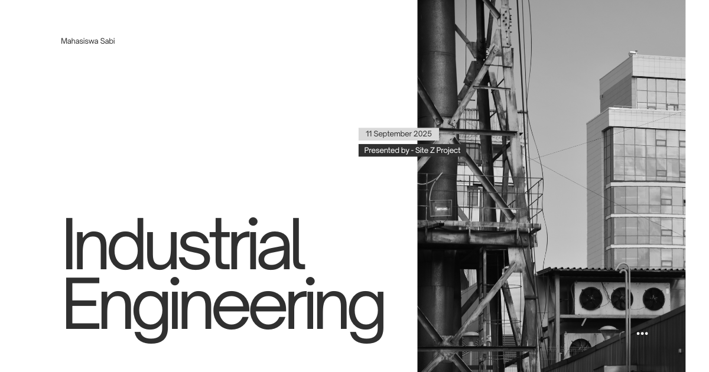

Material Teknik
Material Teknik: Fondasi Pemilihan Material untuk Produk dan Sistem Industri Modern
Setiap produk yang digunakan dalam kehidupan sehari-hari, mulai dari kendaraan, peralatan elektronik, mesin produksi, hingga infrastruktur industri, dibangun menggunakan material dengan karakteristik tertentu. Pemilihan material yang tepat sangat menentukan kualitas, keamanan, biaya, dan umur pakai suatu produk. Dalam program studi Teknik Industri, mata kuliah Material Teknik memberikan pemahaman mengenai sifat, karakteristik, dan pemanfaatan berbagai jenis material yang digunakan dalam proses manufaktur dan sistem industri.
Mata kuliah ini menjadi dasar penting bagi mahasiswa untuk memahami hubungan antara sifat material dengan kebutuhan desain produk, proses produksi, efisiensi operasional, serta keberlanjutan industri. Dengan memahami material teknik, mahasiswa dapat mengambil keputusan yang lebih tepat dalam pengembangan produk dan pengelolaan proses industri.
Apa Itu Material Teknik?
Material Teknik adalah bidang ilmu yang mempelajari sifat, struktur, karakteristik, pengolahan, dan aplikasi berbagai jenis material yang digunakan dalam rekayasa dan industri. Material yang dipelajari mencakup logam, polimer, keramik, komposit, serta material maju yang dikembangkan untuk kebutuhan teknologi modern.
Melalui mata kuliah ini, mahasiswa mempelajari bagaimana struktur atom dan mikrostruktur material memengaruhi sifat mekanik, termal, listrik, kimia, dan fisik lainnya. Pemahaman tersebut sangat penting untuk menentukan material yang sesuai dengan kebutuhan suatu produk atau sistem industri.
Ruang Lingkup Material Teknik
Mata kuliah ini mencakup berbagai aspek yang berkaitan dengan pemilihan, karakterisasi, dan penggunaan material dalam dunia industri, antara lain:
- Struktur dan ikatan material pada tingkat atom dan molekul.
- Sifat mekanik material seperti kekuatan, kekerasan, elastisitas, dan ketangguhan.
- Material logam beserta proses perlakuan panas dan aplikasinya.
- Material polimer untuk kebutuhan manufaktur dan produk konsumen.
- Material keramik yang memiliki ketahanan panas dan korosi tinggi.
- Material komposit yang menggabungkan beberapa material untuk meningkatkan performa.
- Korosi dan degradasi material serta metode pencegahannya.
- Pemilihan material berdasarkan fungsi, biaya, dan aspek lingkungan.
Ruang lingkup ini menunjukkan bahwa Material Teknik tidak hanya mempelajari jenis material, tetapi juga bagaimana material tersebut digunakan secara efektif dalam sistem industri.
Peran dalam Studi Teknik Industri
Dalam bidang Teknik Industri, Material Teknik berperan sebagai dasar dalam pengambilan keputusan terkait desain produk, proses manufaktur, kualitas produksi, dan efisiensi biaya. Mahasiswa mempelajari bagaimana karakteristik material memengaruhi performa produk dan proses produksi secara keseluruhan.
Mata kuliah ini juga mendukung bidang lain seperti perancangan produk, proses manufaktur, manajemen kualitas, ergonomi, rekayasa sistem produksi, dan pengembangan produk baru. Dengan memahami material yang digunakan, seorang insinyur industri dapat meningkatkan produktivitas sekaligus menjaga kualitas produk.
Manfaat dalam Masyarakat, Riset, dan Dunia Kerja
Material Teknik memiliki manfaat yang luas dalam berbagai sektor industri dan pengembangan teknologi modern.
- Dalam masyarakat: menghasilkan produk yang lebih aman, tahan lama, dan efisien.
- Dalam riset: mendukung pengembangan material baru yang lebih kuat, ringan, dan ramah lingkungan.
- Dalam dunia kerja: menjadi dasar bagi profesi di bidang manufaktur, quality control, pengembangan produk, pengadaan material, dan rekayasa industri.
Keilmuan ini sangat penting karena hampir seluruh sektor industri bergantung pada pemilihan dan pemanfaatan material yang tepat untuk mencapai efisiensi dan daya saing.
Tren Terkini dalam Material Teknik
Perkembangan teknologi mendorong inovasi dalam bidang material untuk memenuhi kebutuhan industri yang semakin kompleks dan berkelanjutan.
- Material ringan berkekuatan tinggi untuk industri otomotif dan dirgantara.
- Smart materials yang dapat merespons perubahan lingkungan secara otomatis.
- Material ramah lingkungan yang mendukung konsep ekonomi sirkular.
- Nanomaterial dengan sifat unggul pada skala sangat kecil.
- Material untuk manufaktur aditif (3D printing) yang semakin berkembang dalam produksi modern.
- Daur ulang material industri untuk meningkatkan keberlanjutan proses produksi.
Tren ini menunjukkan bahwa Material Teknik terus berkembang sebagai bidang yang mendukung inovasi teknologi, efisiensi industri, dan pembangunan berkelanjutan.
Penutup
Material Teknik merupakan mata kuliah fundamental dalam Teknik Industri yang mempelajari karakteristik dan pemanfaatan berbagai material untuk kebutuhan rekayasa dan manufaktur. Dengan memahami hubungan antara sifat material dan performa produk, mahasiswa dapat merancang solusi industri yang lebih efektif dan efisien.
Di era industri modern yang menuntut inovasi berkelanjutan, pengetahuan tentang Material Teknik menjadi semakin penting untuk mendukung pengembangan produk berkualitas tinggi, efisiensi produksi, dan penggunaan sumber daya yang lebih bertanggung jawab.
Mahasiswa Sabi
©Repository Muhammad Surya Putra Fadillah